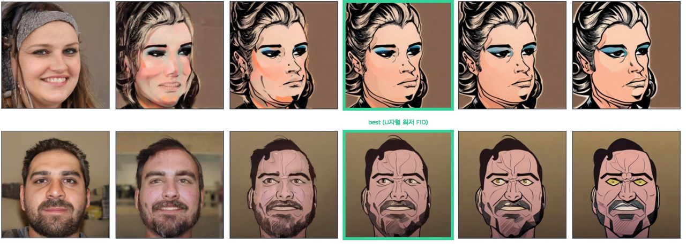
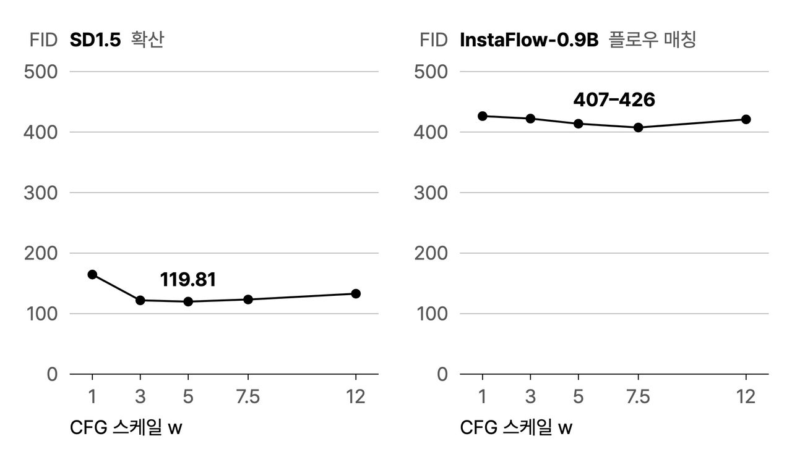
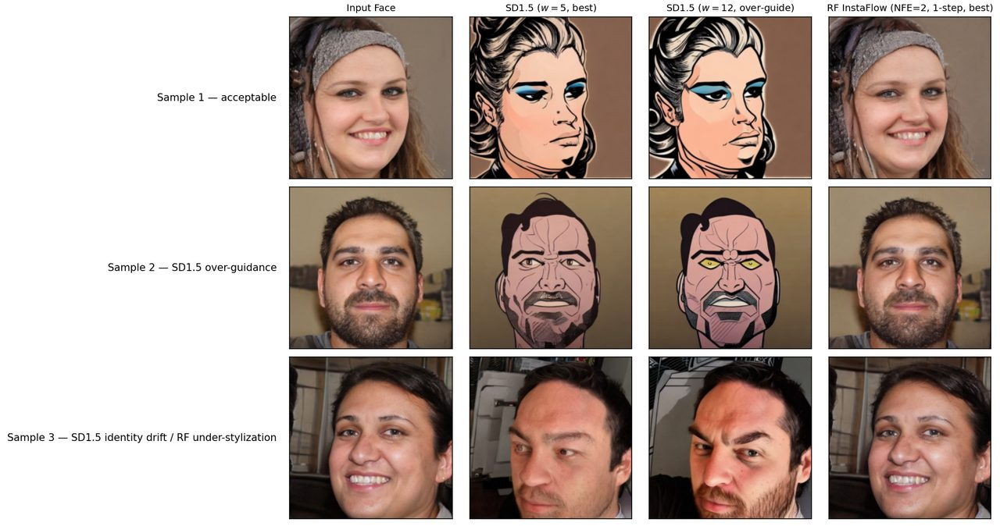

학부 연구논문 · 2026
face2comics
face2comics — 얼굴→만화 변환, 확산 vs 플로우 매칭

같은 가이던스 값이라도 두 모델에서는 하는 일이 다릅니다. 가이던스 하나만 바꾸며 화질과 속도를 쟀습니다.
Stable Diffusion은 적당할 때 가장 좋고, InstaFlow는 거의 그대로
Stable Diffusion은 가이던스가 너무 약하거나 세면 화질이 나빠지고, 중간(5)에서 가장 좋았습니다. InstaFlow는 가이던스를 바꿔도 화질이 거의 변하지 않았고 Stable Diffusion보다 크게 떨어졌습니다.
InstaFlow는 거의 두 배 빨랐지만 그 속도로 품질 차이를 메우지는 못했습니다.

숫자와 함께 실패도 봅니다
대표 샘플을 골라 나란히 놓았습니다. 지표가 가장 좋은 설정에서도 다른 사람 얼굴로 바뀌는 샘플이 나옵니다.

셋째 줄은 Stable Diffusion이 다른 얼굴로 바꾼 실패와 InstaFlow가 거의 바꾸지 못한 실패입니다.